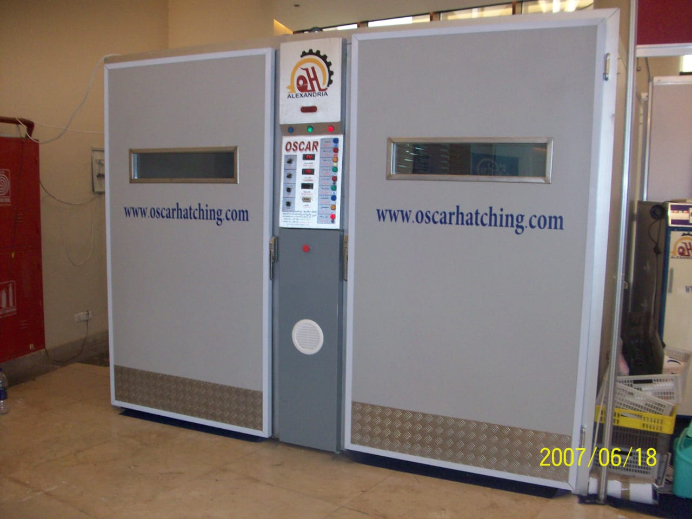
01 | التفريخ
ماكينات التفريخ
القسم الأهم في أوسكار، ونقطة البداية الطبيعية لمن يبحث عن تجهيز مشروع تفريخ أو تطوير طاقة إنتاجه.
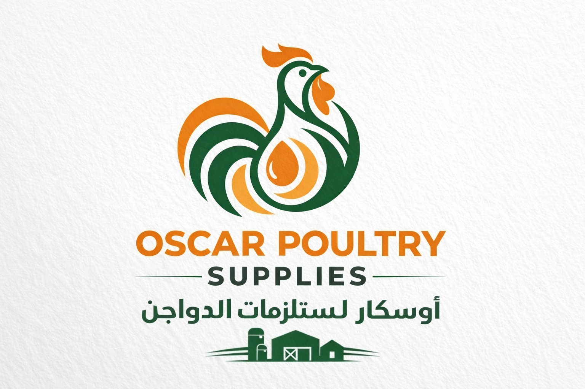
Oscar Poultry Hatching Machines & Farm Equipmentالمنتجات
الهدف من هذه الصفحة أن يفهم الزائر بسرعة ماذا نبيع، وما القسم الأنسب له، وكيف يطلب عرض سعر. لذلك بدأنا بالتفريخ باعتباره أقوى خط لدينا، ثم رتبنا باقي تجهيزات المزرعة حسب منطق شراء واضح.
الخطوط الأساسية
لكل قسم صورة واضحة، ووصف مختصر، والفئة المناسبة له، وفائدة أساسية، وزر مباشر لاتخاذ الخطوة التالية.

القسم الأهم في أوسكار، ونقطة البداية الطبيعية لمن يبحث عن تجهيز مشروع تفريخ أو تطوير طاقة إنتاجه.
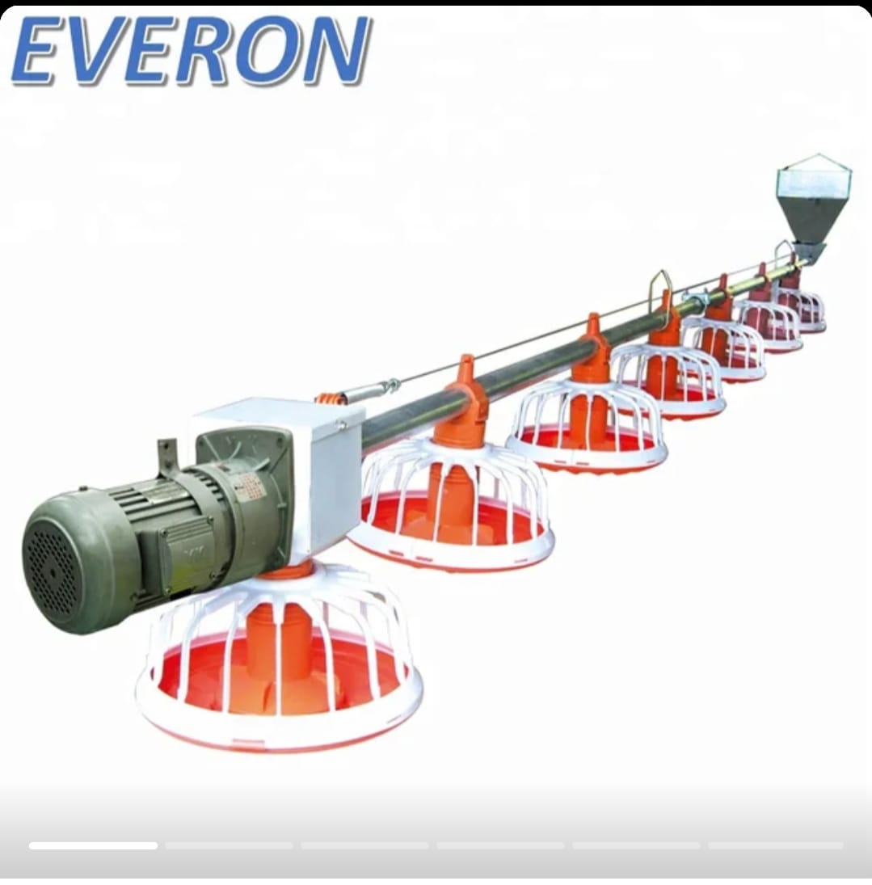
خطوط علف وبان فيدر تساعد على تنظيم التشغيل ورفع كفاءة الإدارة داخل العنابر.
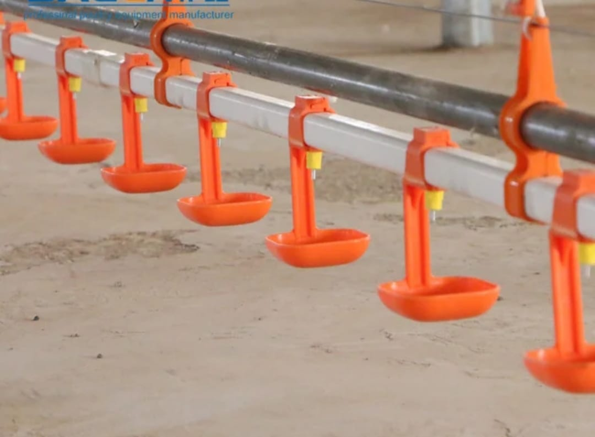
خطوط مياه ونبل ومكونات توزيع مناسبة للمزارع التي تبحث عن تشغيل أكثر انتظامًا وسهولة في المتابعة.
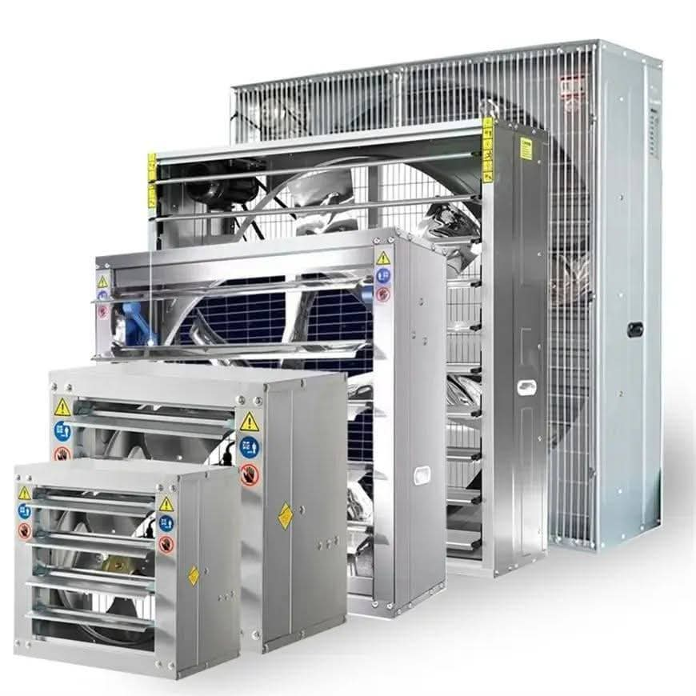
مراوح وشفاطات وخلايا تبريد لتحسين بيئة التشغيل داخل العنابر ورفع كفاءة حركة الهواء.
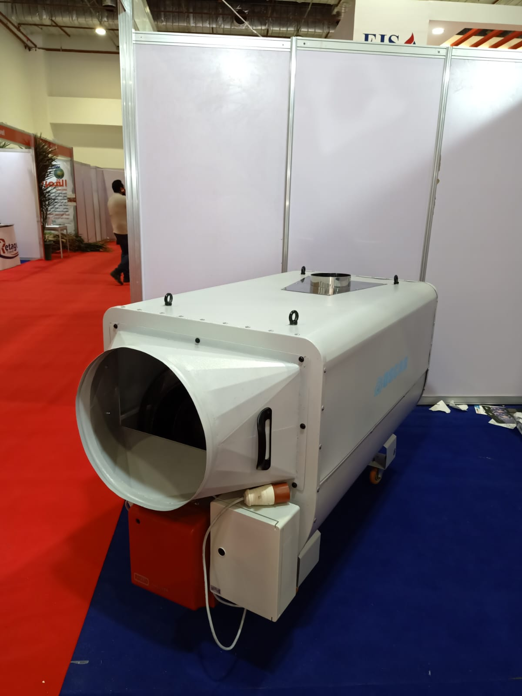
هيترات وحلول تدفئة عملية تدعم التشغيل المستقر داخل المزارع خلال الفترات الباردة.
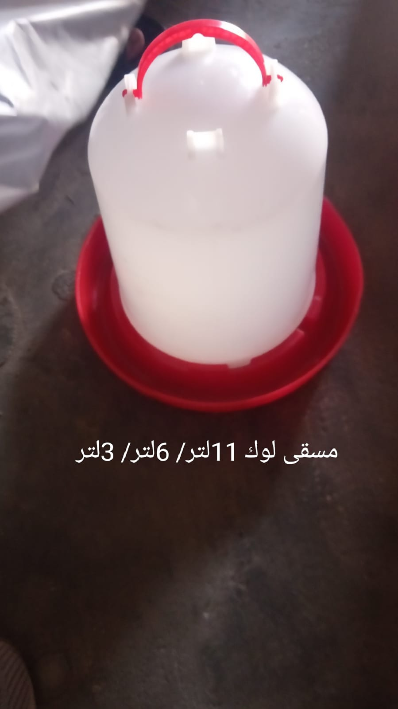
علافات ومساقي يدوية ومستلزمات تشغيل يومية تساعد المزارع والموزعين في تلبية الاحتياجات السريعة والمتكررة.
أقسام أخرى
هذه الأقسام مفيدة حين يحتاج العميل إلى أكثر من نوع منتج أو يريد استكمال الطلب من مصدر واحد.

حلول بطاريات وتجهيزات مناسبة للمشروعات التي تحتاج ترتيبات إضافية داخل العنابر.
ادخل القسم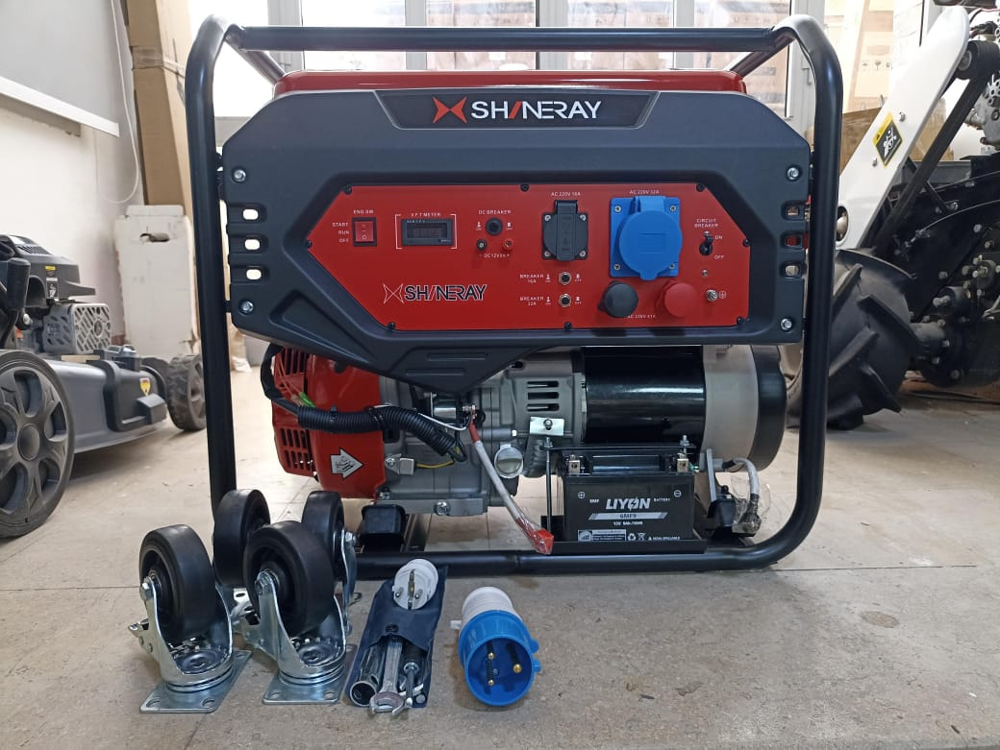
مولدات تدعم التشغيل الاحتياطي وتكمل احتياجات المواقع التي تحتاج مصدر طاقة إضافي.
ادخل القسم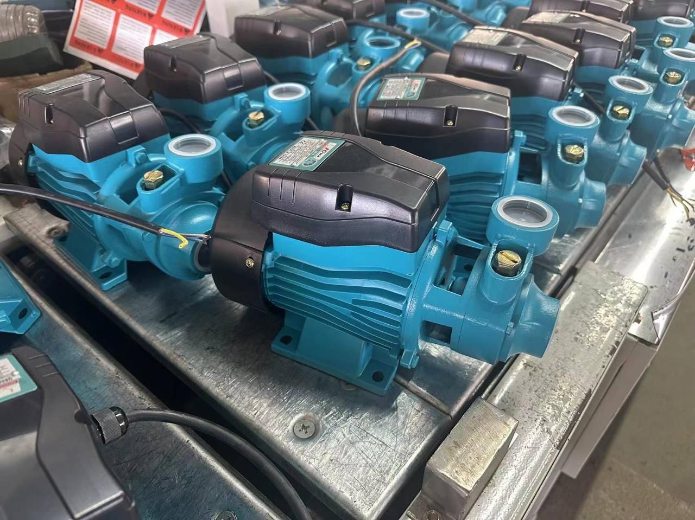
حلول رفع المياه التي قد تدخل ضمن احتياجات تشغيلية أو خدمية بجانب تجهيزات الدواجن.
ادخل القسم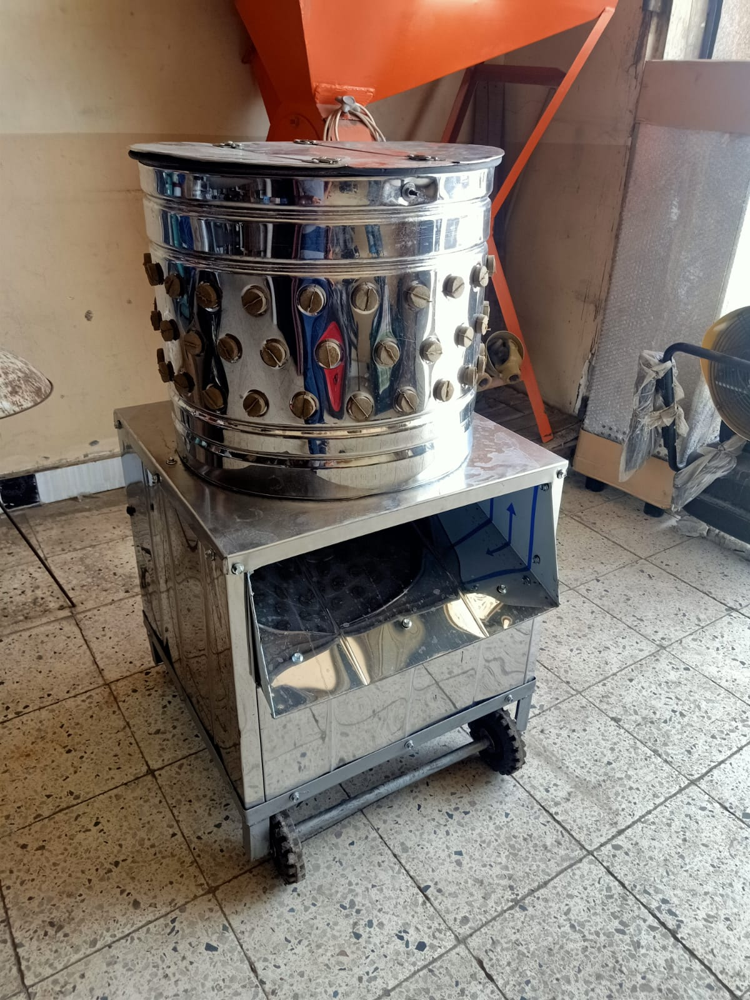
معدات مخصصة للمحال أو المشروعات التي تحتاج تجهيزات تنظيف عملية وسريعة.
ادخل القسم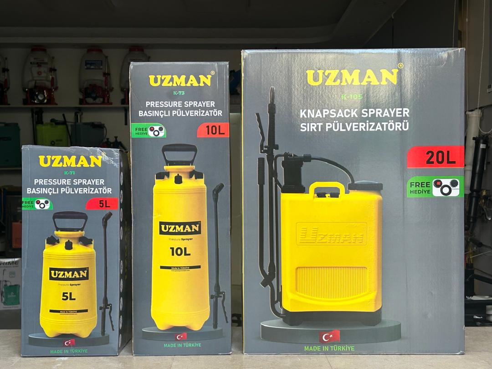
حلول تطهير وتنظيف تدعم التشغيل اليومي والاحتياجات الصحية للمزرعة.
ادخل القسمموازين أرضية وتجارية وموديلات متنوعة تدعم المزارع والمحال والموزعين.
ادخل القسمكيف تختار؟
بعض العملاء يبدأ من ماكينة تفريخ، وبعضهم من تجهيز مزرعة، وبعضهم يريد طلبات جملة كموزع. لذلك صممنا الصفحة لتقودك بسرعة إلى القرار التالي: اختيار قسم، أو طلب سعر، أو طلب تجهيز كامل.